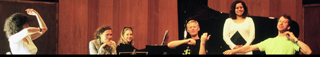

When the portrait painter Oswald (later Sir Oswald) Birley and his wife Rhoda acquired Charleston Manor in 1931, the house was in disrepair. With the Sussex architect Walter Godfrey, the energetic Birleys restored it. They also turned the barn into a concert hall and Lady Birley created the gardens. The Birley's had a lot of artistic friends and a number of them got involved in the summer seasons of talks and music started by Lady Birley in about 1935. Each weekend over a period of four or five weeks there would be recitals, gardening talks, poetry readings – even on one occasion a country dance for artists of the Russian Ballet.
Lady Birley's entertainments lasted well into the 1970s despite the death of Sir Oswald in 1952 and her own increasing ill health. Lady Birley died in 1980, and there followed a fallow period until the mid 1980s when the Manor's new owners, the Headlams, set up a new summer season of concerts. It was under their auspices in July 1986 that a 26 year old cellist called Robert Cohen made his Charleston debut, ‘As I stepped onto the lawn,' he says, ‘and caught my first glimpse of the magnificent barn in such fabulous surroundings, the excitement of the festival captured me. What a wonderful setting for music!' Other artists that year included Dame Janet Baker.
The following year, Sir Geraint Evans introduced a gala evening of opera, music and ballet, devised by Robert Cohen and featuring John Lill, Felicity Lott, Robert playing Haydn's Cello Concerto in C and artists of the London City Ballet, in the presence of HRH the Princess of Wales. When Charleston's current owners, Peter and Julia Kandiah, moved into the Manor in 1988, they invited Robert to revive the Charleston Manor Festival, which he did the following year.
1989 marked Robert's first year as Artistic Director. Solo recitals, chamber music and string orchestral concerts were performed and over the following three years, this format evolved into what proved to be an even more collaborative and stimulating arrangement; guest artists now stayed for the duration of the festival, playing in every concert and building stronger musical relations within a uniquely inspiring environment. Chamber music became the backbone of the festival and a genre particularly treasured by the consistently growing audience. Robert's concept is a shared exploration of the great classics and lesser-known masterpieces by the artists and audience.
Robert's introduction to the works performed is informative, personal and often amusing. There is an obvious freedom of communication between the artists on stage and the audience which is a treasured feature of CMF and which is so rare in concert halls around the world.
Robert's commitment to educating and inspiring young musicians is well known. At Charleston, he and his fellow musicians hold master-classes for instrumentalists individually and in chamber music. Children from as young as eight have had the unique opportunity of taking a class with world leading artists. This follows Robert's belief that exposure to high levels of teaching can never be too early. His own experience, studying with the legendary William Pleeth, showed him that setting down strong roots is invaluable and a life-long source of inspiration.